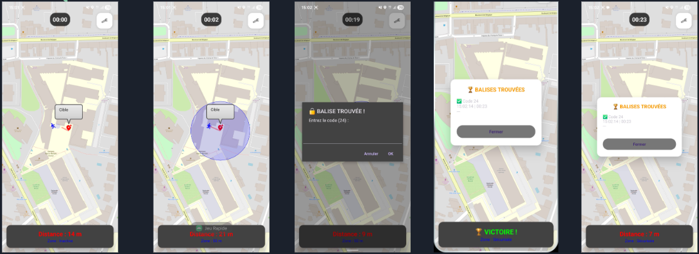
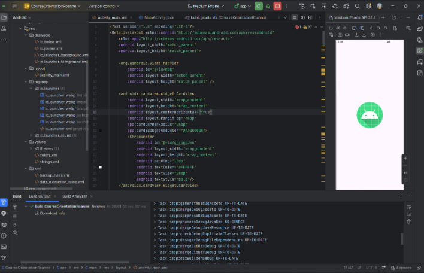
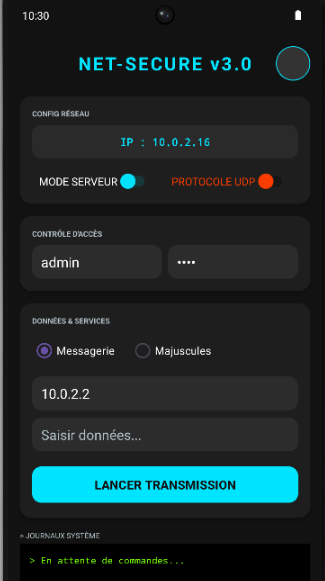
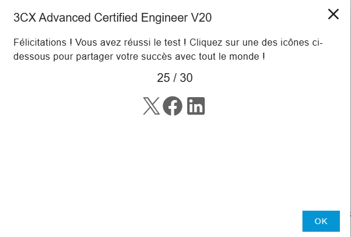
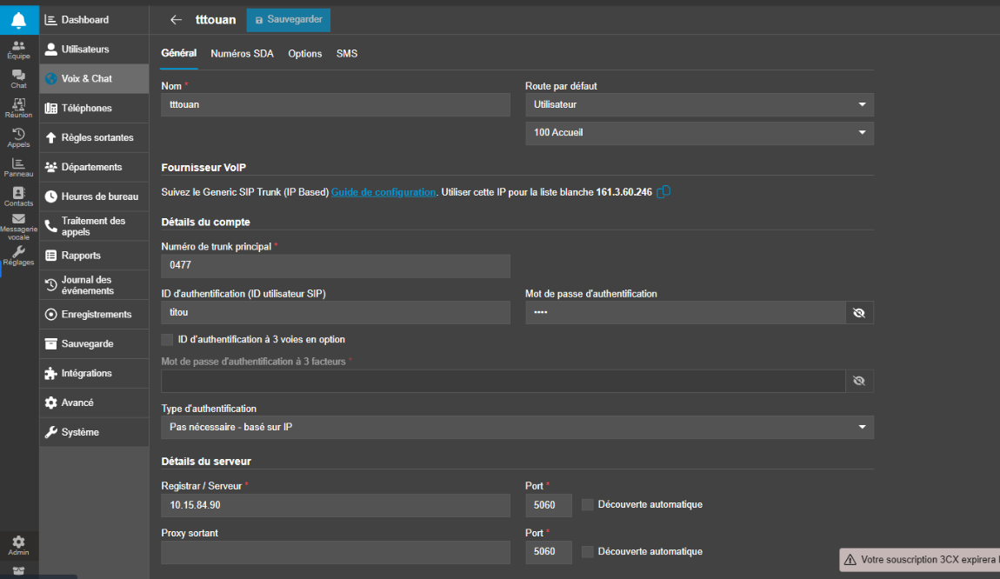
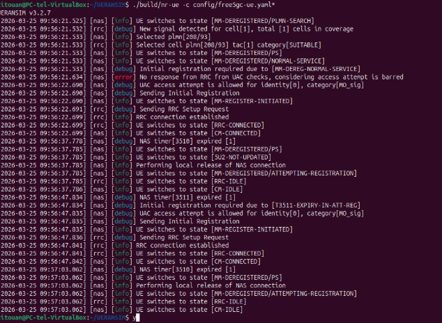
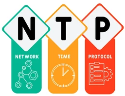
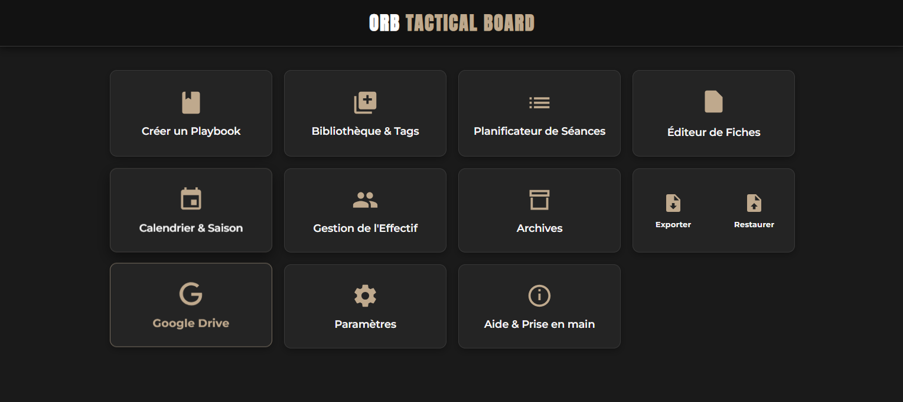

Mon E-Portfolio
Explorez la synthèse de mes compétences ou plongez dans le détail de mes projets phares.
SAÉ 3.01 : Déploiement d'une infrastructure IoT
1. Ce qu'on a fait concrètement
L'objectif de cette SAÉ était de concevoir un réseau de capteurs connectés. Nous avons opté pour la technologie radio LoRaWAN pour sa longue portée et sa faible consommation d'énergie. J'ai configuré les passerelles (gateways) pour intercepter les signaux radio, puis j'ai géré le routage des messages vers un serveur applicatif via le protocole MQTT.
2. Les apprentissages critiques utilisés
AC22.01 : Déployer et caractériser des systèmes de transmissions complexes
J'ai pris en compte les réalités physiques des ondes radio : atténuation du signal, impact des facteurs d'étalement (Spreading Factors) sur la portée, et gestion de la taille des paquets pour optimiser la transmission.
AC22.05 : Capacité à questionner un cahier des charges R&T
Nous avons analysé les contraintes initiales pour faire des choix technologiques justifiés, notamment le compromis obligatoire entre la fréquence d'envoi des données et l'autonomie électrique des capteurs.
3. Mon analyse du projet
"Ce projet m'a prouvé que la configuration logicielle ne suffit pas dans l'IoT : l'environnement physique (obstacles, placement des antennes) joue un rôle critique. J'ai appris à toujours vérifier la qualité de la liaison radio avant de chercher des erreurs de configuration réseau."


SAÉ 3.02 : Création d'une application Client/Serveur
1. Ce qu'on a fait concrètement
L'objectif était de programmer une architecture logicielle distribuée. Nous avons développé un script Serveur et un script Client capables de communiquer via le réseau. J'ai implémenté du multithreading côté serveur pour permettre la connexion de plusieurs clients simultanément, et utilisé le format JSON pour structurer les données échangées.
2. Les apprentissages critiques utilisés
AC23.03 : Utiliser un protocole réseau pour programmer une application client/serveur
J'ai utilisé l'API Sockets en Python pour gérer les connexions de la couche transport (OSI 4). Le choix du protocole TCP a permis de garantir l'intégrité et l'ordre des données transmises.
AC23.05 : Accéder à un ensemble de données depuis une application et/ou un site web
J'ai mis en place la logique de sérialisation et désérialisation en encodant des dictionnaires Python en JSON, permettant au client de traiter des informations structurées plutôt que du texte brut.
3. Mon analyse du projet
"Ce projet m'a permis de comprendre concrètement le fonctionnement des connexions réseau au niveau système. Gérer les threads et les exceptions liées aux déconnexions m'a imposé une grande rigueur dans l'écriture du code."

SAÉ 3.04 : Ingénierie de la Téléphonie sur IP (ToIP)
1. Ce qu'on a fait concrètement
L'objectif de cette SAÉ était de déployer et d'administrer une infrastructure de téléphonie d'entreprise. J'ai installé un autocommutateur (IPBX), créé les comptes SIP utilisateurs et élaboré le plan de numérotation interne (Dialplan). J'ai ensuite configuré un Trunk SIP opérateur pour gérer l'interconnexion avec les réseaux publics (appels entrants et sortants). Enfin, pour protéger la qualité des appels, j'ai segmenté le trafic dans des VLANs Voix dédiés et mis en place une politique de Qualité de Service (QoS) sur les équipements réseaux.
2. Les apprentissages critiques utilisés
AC25.01ROM : Choisir une architecture et déployer des services de ToIP
J'ai configuré les bases du service vocal : analyse des requêtes de signalisation SIP, vérification du transport média (RTP) via des captures Wireshark, et programmation de la logique de routage interne des appels (messagerie, groupements).
AC25.02ROM : Administrer un service de téléphonie pour l’entreprise
L'administration avancée a consisté à configurer le routage des numéros externes (SDA) via le Trunk SIP et à auditer la consommation ainsi que la sécurité du serveur via l'analyse des journaux d'appels (CDR).
3. Mon analyse du projet
"La voix sur IP est le service le plus exigeant en matière de qualité réseau : un téléchargement peut ralentir, mais une conversation téléphonique ne tolère ni la latence, ni la perte de paquets. Ce projet m'a fait réaliser que l'isolation des flux dans un VLAN dédié et l'application d'une QoS stricte ne sont pas de simples options d'optimisation, mais des prérequis absolus pour mettre en production un service de téléphonie professionnel."


Projet Opérateur (R4.10) : Cœur Mobile 5G
1. Ce qu'on a fait concrètement
Le but de ce projet était de simuler une infrastructure 5G. Après avoir défini l'architecture et l'adressage IP dans un cahier des charges, nous avons utilisé UERANSIM pour simuler la partie accès (antenne gNodeB et équipement utilisateur). La partie cœur de réseau a été déployée avec la solution Free5GC sur des machines virtuelles hébergées sous vCenter. L'objectif final, que nous avons atteint, était de faire transiter un appel SIP à travers ce réseau mobile reconstitué.
2. Les apprentissages critiques utilisés
AC22.05 : Capacité à questionner un cahier des charges R&T
La planification en amont a été essentielle pour structurer l'allocation des ressources matérielles des VM et établir le plan de routage interne entre les fonctions du cœur (AMF, UPF).
AC24.01ROM : Administrer les réseaux d’accès fixes et mobiles
J'ai configuré les interfaces de liaison N2/N3 et géré l'authentification des abonnés, en appliquant concrètement la séparation entre le plan de signalisation et le transport des données utilisateurs (tunnels GTP).
AC24.02ROM : Virtualiser des services réseaux
Le déploiement de Free5GC a nécessité l'installation de dépendances sous Ubuntu Server, la compilation de code, et la gestion des réseaux virtuels pour interconnecter la simulation locale au Datacenter.
3. Mon analyse du projet
"Ce projet démontre que les réseaux cellulaires modernes reposent massivement sur la virtualisation logicielle (NFV). La phase de diagnostic réseau m'a permis de comprendre l'importance d'analyser méthodiquement les logs de chaque composant pour valider le processus d'attachement du terminal au réseau."

.png)
Stage en Entreprise : Administration & Sécurisation
1. Contexte et avancement réel
J'ai entamé un stage de 10 semaines en entreprise. À ce stade, j'ai validé ma première semaine sur l'infrastructure de production. Je me suis concentré sur la synchronisation temporelle en déployant et uniformisant le protocole NTP/SNTP sur le matériel réseau (commutateurs, onduleurs et interfaces de management iDRAC).
2. Les apprentissages critiques et objectifs (AC)
Ce que j'ai déjà réalisé (Semaine 1)
AC21.04 (Déployer des services réseaux avancés) : J'ai configuré les clients NTP pour assurer la synchronisation de l'ensemble du parc matériel, étape indispensable pour garantir la cohérence des journaux d'événements (logs).
Ce qui est prévu pour les prochaines semaines
AC24.05ROM & AC23.01 : Mes futures missions incluent la migration de la supervision vers SNMPv3, l'application de la méthode AGDLP sur les partages de fichiers, et la création de scripts d'automatisation sous Debian Linux.
3. Mon analyse de cette première semaine
"Travailler directement sur des équipements en production exige une grande rigueur. Une erreur de configuration sur un commutateur ou une interface iDRAC peut avoir des conséquences immédiates. J'ai intégré l'importance de vérifier mes commandes et de communiquer systématiquement avec mon tuteur avant application."

Projet Personnel : Application Web OrbPlaybook
1. Ce que j'ai fait concrètement
J'ai développé l'application OrbPlaybook pour répondre à un besoin pratique : pouvoir tracer des systèmes de jeu sur un tableau virtuel interactif, y compris hors ligne. J'ai assumé l'utilisation d'assistants IA pour générer le code d'intégration Front-End (HTML/CSS/JS). Mon travail s'est focalisé sur la conception de l'architecture, la définition des spécifications, et l'implémentation de la base de données locale (IndexedDB) couplée aux Service Workers pour le mode hors connexion.
2. Les apprentissages critiques utilisés
AC22.05 : Capacité à questionner un cahier des charges R&T
J'ai formalisé le besoin fonctionnel, anticipé la contrainte principale d'utilisation en zone blanche (sans réseau), et conçu l'architecture modulaire de l'application avant la phase de codage.
AC23.05 : Accéder à un ensemble de données depuis une application et/ou un site web
J'ai structuré la logique de stockage local avec IndexedDB. J'ai géré les transactions pour écrire, modifier et relire les schémas tactiques sauvegardés au format JSON de manière asynchrone.
3. Mon analyse du projet
"L'utilisation de l'IA pour générer du code nécessite de savoir exactement ce que l'on veut. Sans une architecture des données clairement définie en amont, le code généré est inexploitable. L'effort principal a été d'assembler correctement les briques logicielles et de fiabiliser la persistance des données."

.png)